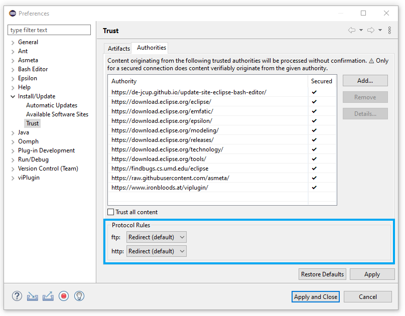
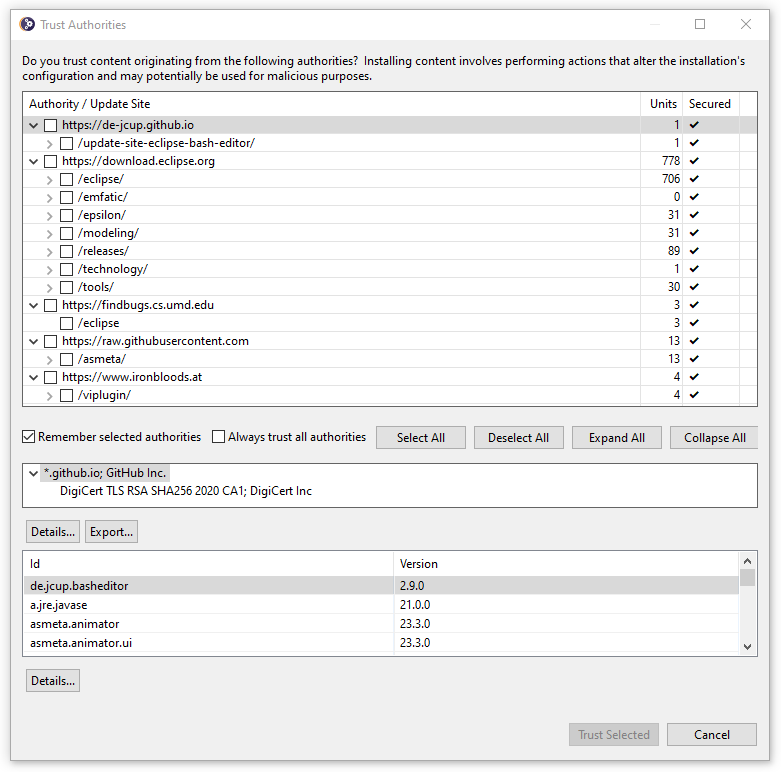
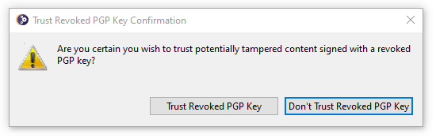
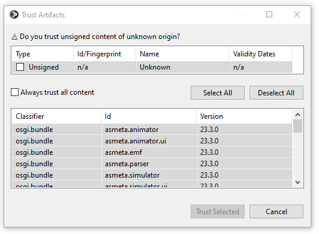

Text Editors

Security
p2.httpRuleredirect- http:// → https://
allow- http:// → http://
block- http:// → fail
p2.ftpRuleredirect- ftp:// → ftps://
allow- ftp:// → ftp://
block- ftp:// → fail
Adding the line -Dp2.httpRule=allow as the last line of the eclipse.ini can be used to restore the previous behavior.
This can be relevant inside a corporate environment where the firewall may introduce certificates into the network traffic that are not recognized by the cacerts of the Java runtime,
i.e., this may be used to avoid "PKIX path validation failed" exceptions that can otherwise be fixed only by importing the firewall certificate into the Java runtime's cacerts.
These rules can be specified as configuration-scoped preferences available via the Authorities tab of the Install/Update → Trust preferences:

The default preference value of each rule is determined by the corresponding system property.
When installing new content as well as when installing updates, the following Trust Authorities dialog is displayed showing the sites that have been contacted, details about those sites, and details about the specific content being installed from each site:

All content must originate from sites explicitly accepted as trusted before installation proceeds and before library artifacts are downloaded. The trusted authorities can be remembered in the preferences to avoid being prompted repeatedly for authorities that have already been considered as trusted. Those recorded preferences are available for review and modification via the Authorities tab of the Install/Update → Trust preferences:

The system property p2.trustedAuthorities can be used to specify a (comma or space separated) list of authorities considered trusted.
The default value is effectively -Dp2.trustedAuthorities=https://download.eclipse.org,https://archive.eclipse.org,
but product providers may set it differently in their product's eclipse.ini.

You may still choose to install such content, but you will be reminded of the risk:

You should consider very carefully the source of the content as tracked for your review before taking this risk.

In particular, if you choose to reject the content, i.e., if you press Cancel or close the dialog, any of the prompted artifacts that have been downloaded during the current install or update operation will be removed from disk to avoid caching of untrusted artifacts.General Updates
ILaunchShortcut2) are replaced by
the resolved launch directly.
This allows to more directly know which launch configuration will be used for the Run or Debug session so it will be easier to identify it afterwards if you intend to tweak it. It is also useful in case you have setup multiple launch configurations of the same for the project and often want to run different ones; for example for A/B testing or for distinct build actions.
slf4j.api version 2 by default.
But even for version 2 the back-ward compatibility of the package org.sfl4j (but only for that package) has not been broken and slf4j.api exports the package org.sfl4j in version 1 and 2.
Therefore Plug-ins that only import and use the package org.slf4j in version 1 don't have to be touched.
Besides breaking changes in the other sfl4j packages than org.sfl4j, version 2 has also changed the way to connect the slf4j.api bundle to a logging-backend to use Java's ServiceLoader mechanism.
Consequently you have to make sure that the logging-backend used in your application uses is compatible with slf4j.api version 2.
Additionally a OSGi Service Loader Mediator is needed to permit Java's ServiceLoader access to the the provider bundle.
To fulfill this requirement Eclipse Platform ships org.apache.aries.spifly.dynamic.bundle by default.
If you assemble a final application you have to ensure that this bundle is automatically activated during startup.
For an Eclipse Product this can be achieved by assigning the Plug-in org.apache.aries.spifly.dynamic.bundle a suitable start-level in the Configuration section of your product.